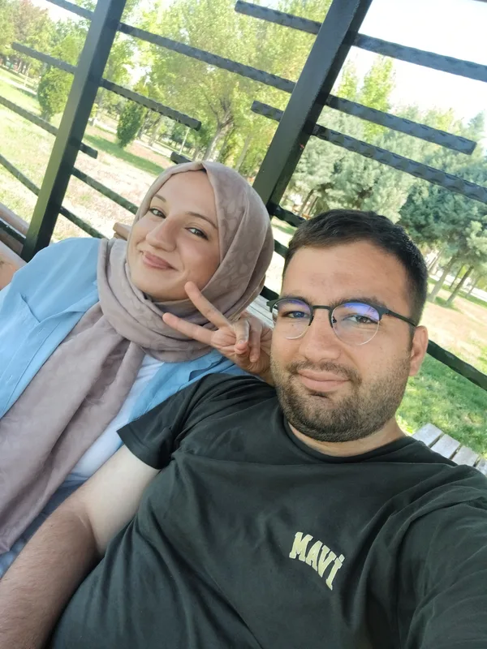
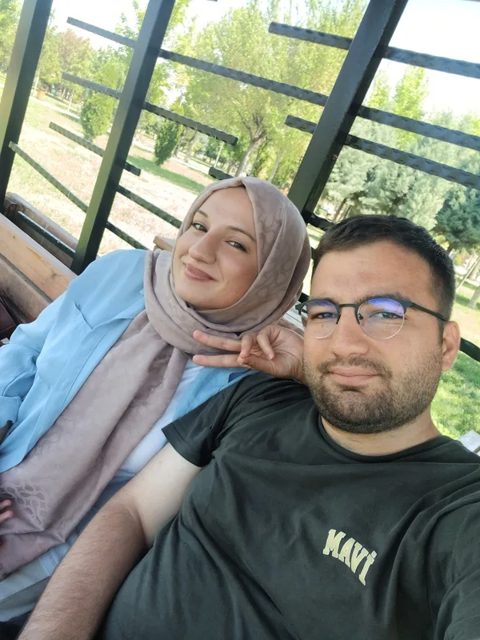

Yeniden Başlamanın Büyüsü
Ayrılık sevgiyi eksiltmezmiş; aksine kime ait olduğunu, nerede huzur bulduğunu öğretirmiş. 24 Ağustos'ta seninle yeniden bir araya geldiğimizde kalbimin tek evinin senin yanın olduğunu bir kez daha tüm benliğimle hissettim.
Bu özel sayfaya erişmek için şifreyi gir sevgilim... ❤️
3. Ay
SEVGİLİ EBRU'YA · ÜÇÜNCÜ AY
Bazı hikâyeler bir kez başlamaz;
en güzel yerinden yeniden başlar...
YENİDEN BAŞLAYAN MASAL

Üçüncü ayımızda anladım ki; gerçek sevgi mesafelerle yıpranmıyor, aksine sabırla ve inançla büyüyor. 24 Ağustos'ta elini yeniden tuttuğum o an, dünyadaki bütün gürültü dindi ve yerini sadece kalplerimizin sesine bıraktı. İyi ki yine yanımdasın sevgilim.
Gözlerinin değdiği her yer güzelleşiyor,
seninle olmak hayatıma en güzel baharı getiriyor.
24 AĞUSTOS - 24 EYLÜL 2026
Tamamlandı · 90 Gün
Bölüm I
Kavuşmamızdan ve üçüncü ayımızdan en özel kareler...






Üçüncü Ayın Yolu
Doksanıncı güne kadar kalbimizin attığı adımlar...
24 Ağustos
Araya giren yazın ve mesafelerin ardından kalplerimiz birbirine yeniden kavuştu. Masalımız kaldığı yerden değil, çok daha derin ve olgun bir sevgiyle yeniden başladı.
Eylül Başı
Aylardır beklenen o ilk bakışma... Yanına geldiğim an bütün özlem bir anda yok oldu. Saatlerce hiç durmadan konuştuk, sanki hiç ayrılmamış gibi sımsıkı sarıldık.
15 Eylül
Birlikte geçirilen her saatin kıymetini çok daha iyi bildiğimiz, ellerimizi bir an bile bırakmadığımız huzur ve neşe dolu günler.
24 Eylül
Doksanıncı günün şerefine kalbimin sahibine binlerce kez şükrettim. Sevginin zamanla eskimediğini, aksine her gün daha da büyüdüğünü gördük.
Bölüm II
Bu ay kalbimize kazınan özel anlar.
Ayrılık sevgiyi eksiltmezmiş; aksine kime ait olduğunu, nerede huzur bulduğunu öğretirmiş. 24 Ağustos'ta seninle yeniden bir araya geldiğimizde kalbimin tek evinin senin yanın olduğunu bir kez daha tüm benliğimle hissettim.
İlk günlerin heyecanı yerini sarsılmaz bir güvene bıraktı. Artık sadece iki sevgili değil, hayatın her anında birbirine dayanan, sırdaş olan ve birbirinin gözünden her duyguyu anlayan iki canız.
Yan yanayken saatlerce hiç konuşmasak bile o sessizlik dünyanın en güzel melodisi gibi geliyor. Varlığın içimdeki tüm telaşları dindiriyor, ruhuma tarifsiz bir dinginlik veriyor.
Bölüm III
Üçüncü ayın, kavuşmanın ve aşkın dizeleri...
I
Gözlerin gözlerin gözlerin,
ister hapisaneme, ister hastaneme gel,
gözlerin gözlerin gözlerin hep güneşte:
…
gün gelecek gülüm, gün gelecek,
kardeş insanlar birbirine
senin gözlerinle bakacaklar gülüm.
II
Böylece bir kere daha boynunlayız sayılı yerlerinden
En uzun boynun bu senin
dayanmaya ya da umudu kesmemeye
III
sana bir şiir yazacaktım
kafiye bulamadım
seninle uyaklı tek şey yine sensin
şairlik zor işmiş
ben en iyisi sana bakayım :))
IV
Terketmedi sevdan beni,
Aç kaldım, susuz kaldım,
Hayın, karanlıktı gece,
Can garip, can suskun,
Elin elimdeydi yine.
V
bazı hikâyeler bitmezmiş sevgilim
sadece nefes alırmış
ben seninle aldım o derin nefesi
bütün takvimleri unuttum
şimdi ömrümün her günü 24 ağustos
VI
Sen o karanfile eğilimlisin, alıp sana veriyorum işte
Sen de bir başkasına veriyorsun daha güzel
O başkası da bir başkasına
Görüyorsun ya bir sevdayı büyütüyoruz seninle
VII
Seni bulmaktan önce aramak isterim.
Seni sevmekten önce anlamak isterim.
Seni bir yaşam boyu bitirmek değil de,
Sana hep, hep yeniden başlamak isterim.
Bölüm IV
Üçüncü ayımızın anısına...
Gönlümün Baharı, Canım Ebru'm,
Bugün tam doksan günü geride bıraktık... Bu üç ayın içinde hem ilk günlerin o tatlı telaşını ve heyecanını yaşadık, hem de araya giren mesafelerin özlemini tattık. Ama en güzeli neydi biliyor musun? 24 Ağustos günü gözlerinin içine yeniden baktığımda, aramızdaki bağın zerre kadar eksilmediğini; aksine birbirimize olan sevgimizin her geçen gün ne kadar derinleştiğini görmekti.
Seninleyken zamanın nasıl akıp gittiğini gerçekten anlamıyorum. Parkta söğüt ağaçlarının altında oturduğumuz o huzurlu anlar, el ele yürürken dünyayı arkamızda bıraktığımız o yürüyüşler, gözlerinin içindeki o pırıltı... Hepsi benim bu dünyadaki en kıymetli hazinem oldu. Bir insanın kalbine bu kadar güzel dokunan bir başkası daha var mıdır, sanmıyorum.
Aşk sadece güneşli günlerde gülmek değilmiş; zor zamanlarda birbirine sığınabilmek, birbirinin elini hiç bırakmamakmış. Biz bu üç ayda hem gülmeyi, hem özlemeyi, hem de birbirimize güvenmeyi en derinden öğrendik. Sen benim bu hayatta sığındığım en dingin liman, kalbime doğan en parlak güneşsin.
İyi ki varsın canımın içi. Üçüncü ayımızı tamamlarken sana olan sevgimin dünden çok, yarından az olduğunu bilmeni istiyorum. Önümüzdeki nice aylarda ve koca bir ömürde elini hep böyle sımsıkı tutacağım.
Sonsuz sevgim ve bağlılığımla,
Furkan